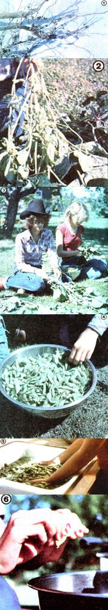

Lois Pritzlaff tells us how she raises all the protein her family needs . . . in her garden!
We don't have cows, goats, chickens, or any other livestock ... but we do raise protein! Our crop of the valuable nutrient comes from our garden . . . in the form of green soybeans for eating and freezing.
However, before you go out and plant your own plot of meat substitute, you should be aware that there are two types of soybeans grown in this country: a field variety that's used for livestock fodder, oil, and industrial products . . . and vegetable soybeans, which are bred for flavor.
It's the latter type of legume, of course, that you'll want to grow for table use.
THE CHOICE GROWS
Years ago-when we planted our first healthful. moneysaving protein crop-the few catalogs that included the seed usually labeled soybeans as "novelty" vegetables. Nowadays, though, many folks have discovered (as the Chinese did over 2,000 years ago) the value of the nutritious bean as people-food, and most seed companies offer a number of varieties listed under "vegetable" or "edible" soybeans.
When you're ready to select the type of soy you want to plant, keep in mind that the crop will require an average of three months of warm weather to mature. Therefore. if you live in a cold climate, you should seek out an early-ripening breed can't, of course, know which soybean variety will grow best in your area, but-after experimenting with several kinds-I can say that the cultural tips in the seed catalogs have proved to be pretty accurate.
Having faced the fact that frosts sometimes appear sooner than expected on our Wisconsin farm, we started planting two or three soy varieties "just in case". So far, the precaution hasn't been a necessary one . . . as all our crops have ripened before winter set in. On the other hand, by growing a number of different types, we've been able to make sure that our beans don't all mature at the same time ... which allows us to put them up in smaller batches.
PLANT'EM PROPERLY
Plan to purchase one pound of seed for every 150 feet of garden row, and-at the same time-buy nitrogen-fixing bacteria (also called a "seed inoculant") to help them along. (Some inoculants will specify that they should be used for soybeans, while other mixtures are designed to aid the growth of any one of several kinds of legumes. The proper bacteria, when present in the soil, help the beans to absorb nitrogen from the air and store it in their root nodules ... a process that not only aids plant growth and bean production, but also improves the soil's fertility.)
In order to get an early start on your crop, sow the seed as soon after the last expected frost as you can. (Soybeans are somewhat hardier than snap beans, so we usually plant them a week earlier than the more common crop.)
And, although the nutrient-packed vegetables will grow in any ordinary nonacid soil, the plot should be thoroughly culti vated. If the ground is already well-nourished, don't fertilize it further, because too many nutrients can actually retard the growth of soybeans. If, however. the area hasn't been enriched in the past, the addition of such organic matter as well-rotted manure or compost will improve the yield.
Just before planting, dampen the bean seeds with water and mix in the nitrogen-fixing bacteria. Then place the seeds 1-1/2 inches deep in rows two feet apart, and thin the seedlings-which will grow very much like bush snap beans-to four inches apart.
RABBITS AND WEEDS
Although we've never had a crop failure that was due to our choice of variety, we have learned a couple of lessons the hard way!
For example, we discovered that this otherwise remarkably pest-free vegetation does have some mortal foes: rabbits! The first time we grew soybeans, the ravenous little beasts ate the emerging crop before we even realized what was happening! Now, we simply put up a temporary fence around the bean patch before the plants sprout, as a routine part of our protein-growing procedure.
We learned our second lesson one spring when we went out of town just as the small plants were coming up. Upon returning, we saw that weeds had just about choked out our garden, and only a few bean plants remained.
Be sure, therefore, to keep the young soybeans weed-free, at least until they're big enough to stand on their own and shade out the competition. From then on, they'll grow quite nicely with very little attention from you.
PUTTIN' 'EM AWAY
If you plan to use the soybeans green and freeze them, as we do, they'll be ready to harvest when the pods become plump in late summer. Don't put off the pickin' and processin' task, though, because the pods and plants turn from bright green to yellow in only a few days. Once that "change" occurs, your beans will be too mature to freeze.
In my opinion, the easiest way to pick the pods is simply to pull the plants up or cut them off with pruning shears at ground level, depending on how easy it is (or isn't) to get the roots out of your soil. Then you and your family (or whoever else you enlist to help) can pick a comfortable spot to do the pod pluckin'.
When you have a big pan full, wash the pods and blanch them to aid in the removal of the beans. (If you don't have a blanch ing kettle, just fill any large pot with enough hot water to cover the legumes.
Bring the liquid to a rolling boil . . . put in your harvest . . . allow the kettle to return to a full boil . . . and then blanch the pods for five minutes.)
Meanwhile, fill your sink or another large pot with very cold water, and-when the boiling time is up-immerse the steaming vegetables in the cold bath ... adding more water, if necessary, to cool them completely. Let the pods remain in the chilly soak for another five minutes.
Removing the beans from their hulls is easy: All you have to do is squeeze the seeds out over a bowl or pan. If youngsters help, they'll probably soon discover that-when you squish the pods just right-you can "shoot" the beans a great distance. (Let 'em have a bit of fun at first, and the tads will probably accomplish the rest of the job very quickly and efficiently. Ever since my daughters were quite small, they've really enjoyed taking over this chore.)
Next, transfer the shelled beans to freezer containers, leaving an inch or so of "head room". Then seal, label, and freeze 'em ... and transfer the empty hulls to your compost heap.
Although green soybeans contain only about one-third as much protein as the dried variety, they're still higher in this essential nutrient than any other vegetable . . . and their succulent, nutlike flavor makes 'em the most palatable, nutritious. low-starch garden produce around. Furthermore, besides containing vitamin C (which dried soybeans don't), the green edibles are also richer in vitamin A than are the dried legumes.
I find the tasty morsels ideal for use as a meat extender . . . that is, I merely use less meat and add soybeans to my recipes for soup, stew, etc. (This same technique can be employed when preparing hamburgers, meatloaf, and almost any casserole that calls for ground meat.) The remarkable vegetable can also be used as a side dish all by itself.
So why not grow protein in your garden this year? Then, after you've used up your first soybean crop-probably in a variety of ways that I've never even dreamed of-you'll want to plan to plant even more next season!
|
 |
|
|